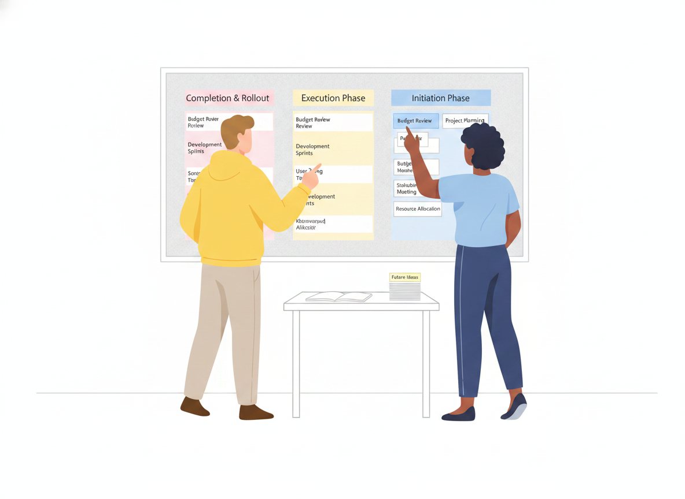

How to Build a Knowledge Base People Actually Use
Most knowledge bases don't fail because the writing is bad. They fail because nobody can find the right answer, or because the answer they find is out of date. You publish a hundred articles, traffic trickles in, and the support queue stays exactly as long as it was before.
A knowledge base is only as good as the answers people actually retrieve from it. This guide walks through how to plan, structure, write, and maintain one so it stays findable, accurate, and trusted — and points out the few failure modes that quietly sink most projects.
What a knowledge base is (and what it isn't)
A knowledge base is a single, organized home for the answers your readers need — how-to articles, troubleshooting steps, policies, product manuals, and FAQs — published so people can find them on their own. Internal knowledge bases serve employees; external ones serve customers. Many teams run both from the same source.
What separates a knowledge base from a pile of documents is intent. Every article exists to answer a real question, and the whole collection is organized, searchable, and maintained so those answers stay correct. A folder of orphaned files is storage. A knowledge base is a product.
Start with the questions, not the articles
The most common mistake in knowledge management is writing the articles you have instead of the answers people need. Before you draft anything, collect the real questions:
- Mine your support tickets, chat logs, and search queries for recurring problems.
- Ask frontline support and sales which three questions they answer every week.
- Note the exact words people use — readers search in their own language, not yours.
Then write each article to answer one question completely. Phrasing headings as the question a reader would actually type ("How do I reset my password?") makes content easier to scan and easier for search to match.
Structure your knowledge base around how people use it
Once you know the questions, organize the answers. Decades of usability research point to one principle: group content by task, not by the team that owns it. In analyses of intranet information architecture, task-based structures came to dominate — by 2014, 86% of redesigned intranet IAs were organized by what people were trying to do rather than by department. Structures built around tasks survive reorganizations; structures built around your org chart break the moment the org chart changes.
A few structural rules that hold up well:
- Keep top-level categories few and clear. Well-designed intranets tend to settle on roughly seven top-level categories on average — enough to cover the ground without overwhelming the reader.
- Make every label descriptive, specific, and mutually exclusive. Vague or overlapping section names ("Resources," "General," "Other") force readers to guess. If two categories could plausibly hold the same article, merge or rename them.
- Expose depth without burying it. Grouped menus and clear navigation let readers see secondary content at a glance, which improves discoverability instead of hiding answers three clicks down.

Write for the reader, in plain language
Clear writing isn't a nicety — it's the difference between an article that deflects a ticket and one that creates one. The U.S. government's plain-language guidance, rooted in the Plain Writing Act of 2010, frames the goal simply: content should be written for its specific audience and be genuinely easy to understand.
Practical habits that get you there:
- One idea per paragraph, short sentences, plain words. Cut jargon your reader wouldn't use.
- Lead with the answer. Put the resolution first, then the explanation. Readers scan; reward them fast.
- Use steps for procedures. Numbered steps beat a wall of prose for anything sequential.
- Test for comprehension. Plain-language practice treats testing as a real step — watch a few real users try to complete the task using only the article.
Writing clearly is also how you scale support without scaling headcount: every reader who self-serves successfully is a question your team never has to field twice.
Make it findable, because search is the front door
Most readers don't browse a knowledge base — they search it, or they land on one article from Google and never see your navigation at all. So findability has to be designed, not assumed.
Low traffic on a good article usually means a discoverability problem, not a content problem. The fix is to look past raw analytics at the things that actually drive findability: the article's metadata, the words in its title and links, where it sits in navigation, and what related content points to it. Write titles as the questions people ask, tag articles at the moment you create them, and link related answers to each other so one good page leads to the next.
This is also where SEO and internal search overlap. Descriptive titles, clean structure, and meta tags help your articles surface in Sonat and in Google alike — the same clarity serves both.
Keep it accurate: the part everyone skips
A knowledge base is never "done." The fastest way to lose a reader's trust is to give them a confident answer that turns out to be wrong, and stale content does exactly that. The upkeep that keeps a knowledge base healthy comes down to a handful of habits:
- Single source of truth. Publish each answer in exactly one place, then link to it from everywhere it's relevant. Duplicated answers drift apart and contradict each other.
- Clear ownership. Every article needs an owner who is accountable for keeping it correct. Pages with no owner are the first to rot.
- Freshness checks. Track when each article was created and last edited, and review on a schedule. Archive or remove pages that are no longer accurate.
- Deduplication. Periodically hunt down and merge near-duplicate articles so search returns one strong result, not three weak ones.
- Feedback loops. Let readers rate articles or flag what didn't help. That signal tells you which pages to fix next.
Version history matters here too. When you can see what changed, when, and who changed it — and roll back a bad edit — maintenance stops being scary. Review and approval workflows add a second pair of eyes before a change goes live, which is exactly what high-stakes content like policies and procedures needs.
Where AI fits in an AI knowledge base
AI is changing how readers reach answers, but it doesn't change the fundamentals — it raises the stakes on them. An AI assistant that answers questions from your knowledge base is only as trustworthy as the content underneath it. Feed it duplicated, stale, or contradictory articles and it will confidently serve duplicated, stale, or contradictory answers.
The practical takeaway: invest in the content layer first. Clean, well-owned, deduplicated, single-source articles are what make AI-powered answers reliable. AI can then help you draft new articles faster, suggest where coverage is thin, and — through machine translation — make the same answers available to readers in their own language. Keep a human in the loop for anything high-stakes, and let AI take the repetitive load.
A simple way to start
You don't need a hundred articles to launch. You need the right ten.
- List the top 10 questions your team answers most often.
- Write one clear article per question, answer-first, in plain language.
- Group them into a few well-labeled categories organized by task.
- Publish, then watch search queries and feedback to see what's missing.
- Assign owners and a review cadence before the collection grows.
Then expand deliberately. A small knowledge base that's accurate and findable beats a large one nobody trusts.
The shift that makes a knowledge base work
The teams that succeed stop treating a knowledge base as a documentation dump and start treating it as a living product: organized around real questions, written in plain language, designed to be found, and maintained so every answer stays true. Get those four things right and the knowledge base starts doing what it was always supposed to do — answer the question before it ever reaches your inbox.
Ready to build one? Sonat gives non-technical teams a single place to write, organize, translate, and publish a knowledge base your readers can actually use.